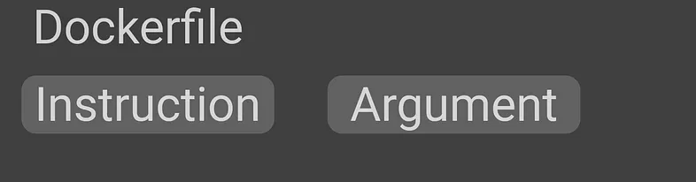

Some useful commands and concepts to use Docker!
The original video that I take notes from :
In this article, I‘ll talk about Docker. We will begin from why we need to use it, to how do we manage multiple Docker containers at the same time.
Why do we need Docker?
We have web servers, database services, messaging services, etc. and all of them have their dependencies(libraries, OS version, etc.) and there can be a conflict between them. We call it “The matrix from Hell”.
What does docker do?
Run each component in a separate, isolated environment with its dependencies and its libraries. All within the same VM or host.
What are the differences with VM?
VMs are complete isolation! They have their hardware, kernel, and OS. But docker containers use the same hardware and same Linux kernel.
That is the reason why you can‚Äôt have a Windows container. You can say: ‚ÄúHey! I have a docker on windows!‚Äù. Then I say, look for WSL. üòÑ
Containers meant to run a specific task or process, not meant to host an OS.
Some Useful Docker Commands
- docker version: It gives the docker version.
- docker run: It is used to run a container from an image
- docker run nginx ⇒ Runs instance of the Nginx application on the docker host
- docker run -d nginx ⇒ Runs in the detached mode. That means the container will run in the background, and you can continue to use the terminal
- docker run — name webapp nginx ⇒ Run a container with the given name
- docker run -it nginx ⇒ “-i” gives stdin to docker, you can get input from the terminal. “-t” gives terminal so your dockerized app can print something
- docker run -v /opt/datadir:/var/lib/mysql ….. ⇒ The container maps /var/lib/mysql(in docker) to /opt/datadir(in your pc). Your data will persist even when you delete the container.
- docker run -p 80:5000 nginx ⇒ Forward your port 80 to container’s port 5000.
Note: You can’t bind the same host port to the multiple docker instances.
docker ps: List all running containers and several key information about them. If used with the “-a” parameter, you can see previously stopped or exited containers.
docker stop: It stops the running containers. Needs container ID or name.
- docker stop silly_sammet
docker rm: Removes stopped or exited container permanently. If it prints the name back, we are good.
- docker rm silly_sammet
docker images: Gives a list of downloaded images and their sizes.
docker rmi: Removes the given image. You need to remove all dependent containers before.
- docker rmi nginx
docker pull: Just downloads the images so you won’t wait when you want to run the image.
docker exec: Execute a command in the container.
- docker exec distracted_meclintock(container name) cat /etc/host(command)
docker inspect: It returns all details of the container in JSON format.
- docker inspect webapp
docker logs: This shows the logs of a container. It is useful when your container runs in detached mode
What is this Dockerfile?

Dockerfile is a text file written in a specific format that docker can understand.
How can I export/import my docker image as a tar file?
You can export your Docker Image as a .tar file with this command:
docker save —output chatbot.tar nusret/chatbotAnd you can easily import it with a very similar command.
docker load —input chatbot.tarENTRYPOINT VS CMD
Let’s say we have a docker container that just “sleeps” named “sleeper”. The docker file would be like this:
FROM Ubuntu
CMD ["sleep","5"]When I run the command:
docker run sleeper sleep 10This CMD command will get replaced with sleep 10. But as this is a sleeper container, I could only say “10” and the container must sleep. To do this we change the dockerfile like this:
FROM Ubuntu
ENTRYPOINT ["sleep"]This time when I run:
docker run sleeper 10The “10” will be appended to the “sleep” command and I can just set the sleep time. But what if I don’t write any number? How can I add a default sleep time?
FROM Ubuntu
ENTRYPOINT ["sleep"]
CMD ["5"]